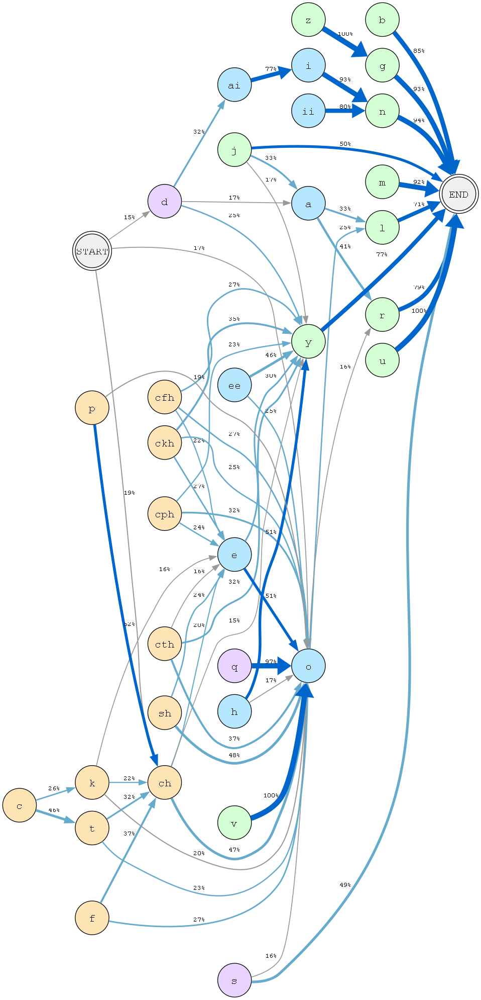
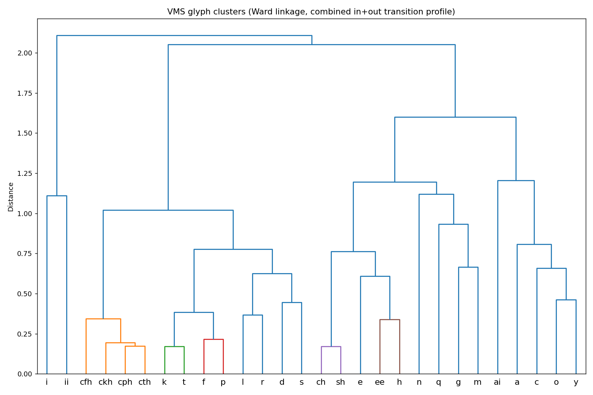
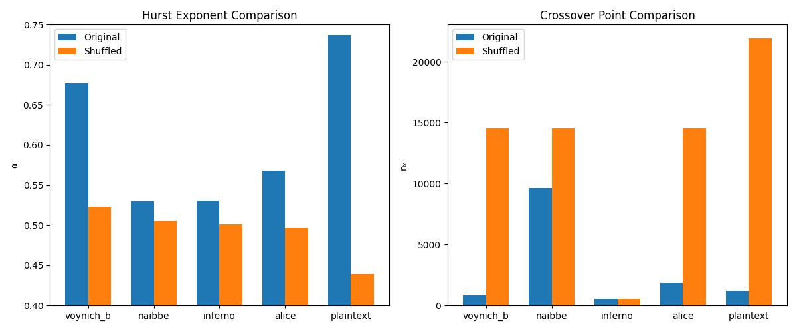

Selected results






The Voynich Manuscript is a 15th-century illustrated book written in a unique script that has never been identified. Experts generally fall into three camps on its linguistic origin: an encoded natural language, an artificial constructed language, or a hoax. Of the three, my analysis concludes that the script leans towards the constructed-language theory.
Leveraging the power of the Claude CLI, I constructed various statistical measures that fingerprint the generative process behind a text. Two results stood out the most. First, the manuscript has an unusually rigid word-internal structure that a simple template or Markov process reproduces almost exactly, yet no generic cipher I tested can recreate without secretly building the answer in. Second, the manuscript’s word choices carry a token-minting signature (around 70% near-unique words and very weak word-to-word dependency) that appears in generated text but in no clean natural language.
Taken together, the structure looks generated rather than enciphered. I stop short of claiming the manuscript is meaningless, as that is an unfalsifiable claim. Whether the word choices encode real content is a separate layer and stays open. But the evidence leans against the straightforward cipher story that has driven most attempts to read it.


